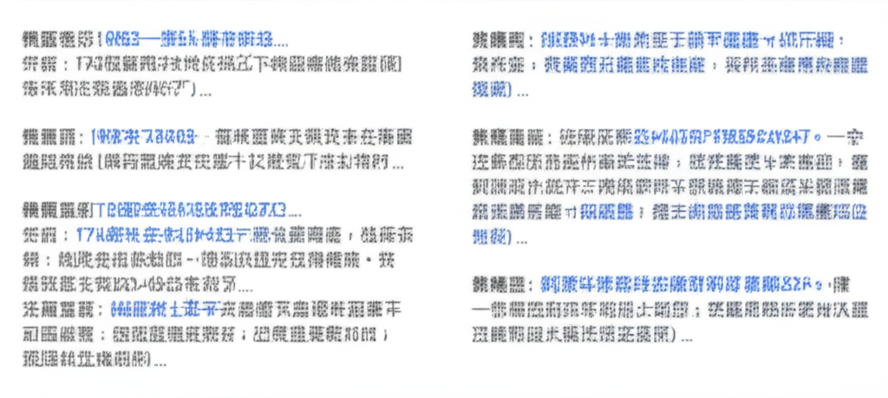

# 近期健康新聞摘要與分析：高血壓、心血管疾病成關注焦點
## 引言
近期健康新聞聚焦在高血壓、心血管疾病的預防與治療，以及肥胖相關的健康問題。從新聞報導中可以看出，高血壓的知曉率仍然偏低，心血管疾病在夏季和冷氣團來襲時都需特別留意。此外，兒童高血壓、病態性肥胖等議題也受到關注。
## 主體內容
### 第一點：高血壓的預防與控制
多篇新聞報導都提到了高血壓的預防與控制。例如，多個新聞都提到了 "**【健康Live直播】你認識高血壓嗎？夏季也要預防心血管併發症，守護 ...**" ，強調台灣約有三分之一的患者不知道自己患有高血壓。預防和控制高血壓的三個要點包括飲食控制（限制鹽分攝取，每天不超過6克）、生活習慣調整以及定期量測血壓。此外，ETtoday 的新聞 "**2大習慣恐釀「兒童高血壓」 早期無症狀、長期傷心腦腎**" 則提醒家長關注兒童高血壓的問題，強調健康飲食和體重控制的重要性。
### 第二點：心血管疾病的風險因素
多個新聞強調了心血管疾病的風險因素。例如，網易新聞 "**小伙心脏不舒服，上出租后打了三通电话！表现“超强自救意识”|出租车 ...**" 雖與高血壓無直接關係，但提到了肺心病、糖尿病等基礎疾病對心血管的潛在風險。公視新聞 "**冷氣團接力賽心血管病患留意｜ 公視新聞網PNN**" 則提醒心血管疾病患者在冷氣團來襲時要特別注意血壓控制，若出現頭暈、血壓高等症狀，應立即就醫。這顯示無論是夏季或冬季，心血管疾病都是需要持續關注的健康議題。
### 第三點：肥胖與代謝問題
健康新聞網的 "**178公斤男擺脫病態性肥胖！ 機器手臂助攻減重、慢性病大幅改善 ...**" 報導了一則關於病態性肥胖患者透過手術減重，並改善糖尿病、高血脂和睡眠呼吸中止症的案例。這突顯了肥胖不僅是外觀問題，更與多種慢性疾病息息相關。
## 結論
總體而言，近期健康新聞凸顯了高血壓和心血管疾病的預防與控制，以及肥胖相關健康問題的重要性。加強對高血壓的認知、改善生活習慣、控制體重，是維護健康的重要步驟。民眾應定期進行健康檢查，及早發現潛在的健康問題，並積極採取措施加以預防和治療。